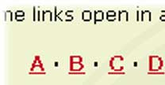

09. Error Recovery
Error Recognition and Recovery
Error messages should be expressed in plain language (no codes), precisely indicate the problem, and constructively suggest a solution.
— Jacob Nielsen
On University of Louisiana at Lafayette's website, Help and Documentation is not as necessary. A site index is provided; however, its naming convention differs from the standardized nomenclature of a site map. Instead of calling a "Site Map", University of Louisiana at Lafayette calls its site map "Index A-Z". This can be quite inefficient if it deviates from the norm.

On the Site Map page, a list of departments is listed. However, the list is very long and can prove to be a challenge for a few users especially those who want their items fast and quick. An dedicated search just for the index with instant search results just like Google Instant may help the site here.